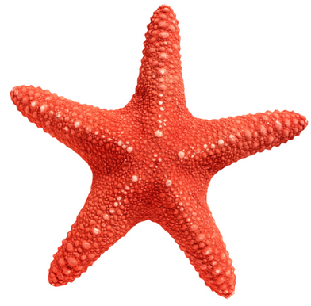
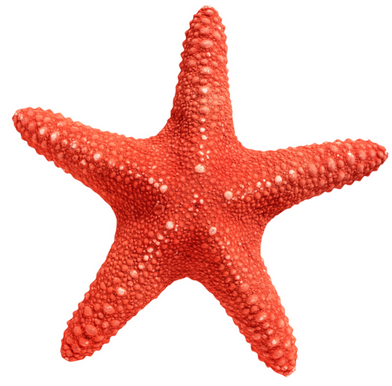
Mystery in Symmetry
חמשת הגופים נקראים על שם אפלטון, למרות שאפלטון לא גילה אותם, הם התגלו הרבה קודם, כאלף שנה לפני אפלטון.
Raphael’s “School of Athens”
אפלטון בתמונה “האקדמיה של אתונה”
ארכיאולוגים מצאו בסקוטלנד מאות כדורי אבן שנוצרו בתקופה הנאוליתית, על פניהם סותתו עיטורים ובליטות מסודרות. לא ידוע אם הייתה מטרה שימושית לכדורים אבל ברור שיש כאן חיפוש אחר החלוקה הסימטרית של פני הכדור.
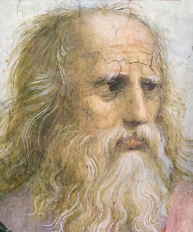 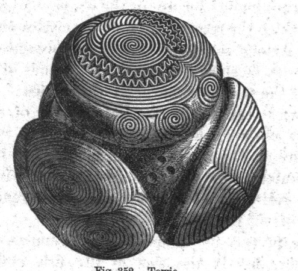
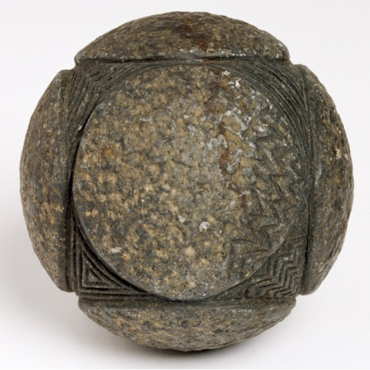 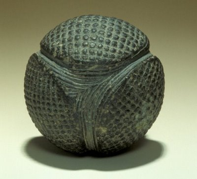
מתוך מאות הכדורים שנמצאו, בלטו במיוחד חמישה כדורים מיוחדים, חמשת האפשרויות לחלוקה סימטרית של הכדור. אלו הם הגופים האפלטוניים בגרסתם הכדורית.
הכדורים המסותתים הם העדות הקדומה ביותר של החיפוש אחר הסימטריה בגוף תלת ממדי, בכדור. ושל הגילוי המפתיע: יש רק חמש חלוקות סימטריות של הכדור, או בצורה מעשית יותר: יש רק חמש דרכים לסידור סימטרי של נקודות על פני כדור, אוסף הנקודות יוצר את חמשת הגופים האפלטוניים.
כאן ניתן לראות את הקשר בינם ובין הכדור.
כל אחד מהגופים חסום בכדור, הקדקודים מסמנים נקודות על מעטפת הכדור, הנקודות מפוזרות בחלוקה סימטרית על מעטפת הכדור.
בהמשך ננסה להבין מדוע התגלית הזו קיבלה משמעות סימבולית, מיסטית, לאורך ההיסטוריה.
קרא עוד…(היסטוריה)
האתגר שבכדור, מסע בזמן:
נלך בעקבותיהם של החוקרים הפרהיסטוריים, לא נסתת כדורי אבן, נשתמש בכדורי פלסטיק ונסמן בעזרת טוש. נדמיין שאין לנו ידע מוקדם “ונגלה בעצמנו” את חמשת החלוקות של הכדור ואת הגופים האפלטוניים. נרגיש כנראה, כמו שהם הרגישו, שגילינו תגלית משמעותית.
נתנסה בגאומטריה מסוג שונה, במקום שרטוט במישור נשרטט על כדור. מסתבר שהטכניקה הזו, סימון על כדור, נוחה מאד כאשר עוסקים בגופים כאלה. כשנחזיק ביד את הכדורים המשורטטים נבין היטב את הגאומטריה המיוחדת שלהם. תוך כדי שרטוט נופתע לגלות שנוצרים “מעצמם” זוגות דואליים ושילובים מעניינים אחרים.
קישור לפעילות עם הכדורים……..
A Search for Symmetry
המספר הגדול של כדורי האבן מעיד כנראה על תהליך, מסע לחיפוש הסימטריה של פני הכדור, ננסה להבין מהו האתגר שהניע את החוקרים הקדומים לצאת לחיפוש הזה. יתכן שהתשובה נמצאת בטבע, הסימטריה המופלאה שבטבע.
ננסה לחזור אחורה בזמן, לעולמם של האנשים הסקרנים בתקופה הנאוליתית.
נתחיל את המסע בהנחה שאין ידע מוקדם, נתעלם מהעובדה שאנו מכירים את חמשת הגופים, אפילו הקובייה אינה מוכרת עדיין. סביבנו נמצא רק טבע, גם החפצים שלנו הם דברים שאספנו בטבע. אנו מתבוננים ביופי ובהרמוניה שבטבע המקיף אותנו.
תכונה אחת מושכת אותנו במיוחד, הסימטריה.
הפנים והגוף שלנו סימטריים וכך גם הצמחים ובעלי החיים. אנו מבינים שהסימטריה היא לא רק יופי חיצוני, היא חלק ממשהו מופלא. היא החלק הנראה לעין של יצירה מושלמת והרמונית.
הסימטריה היא עדות נוספת לחוכמה העמוקה של הבריאה.
כדי להבין את החוכמה הזו אנו חוקרים את הסימטריה.
תחילה אנו מבינים מישור אחד של סימטריה, כמו הסימטריה של הפנים שלנו, או של נוף המשתקף במי האגם.
בהמשך, אנו מתבוננים בסידור עלי הכותרת בפרח, בפתיתי השלג, בכוכב הים, ומבינים שיש כאן כמה מישורי סימטריה.
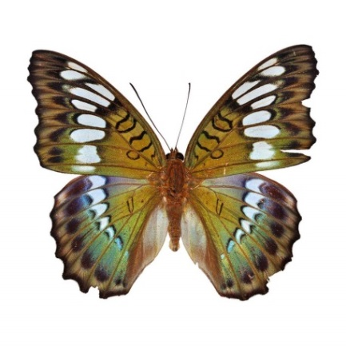 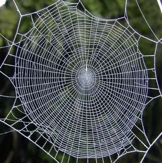 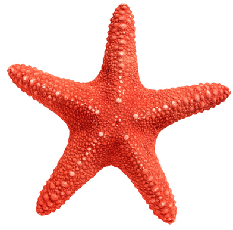
הטבע מדגים באופן ברור את החלוקה הסימטרית של המעגל ואת המספר הרב של מישורי הסימטריה שבו, המעגל הוא הצורה הסימטרית ביותר במישור.
כשם שהמעגל מושלם במישור, הכדור מושלם במרחב, הוא הגוף הסימטרי ביותר.
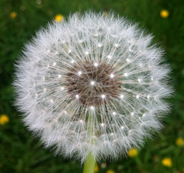 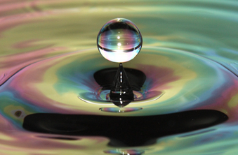 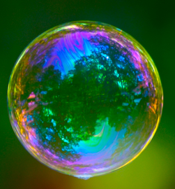
הפשטות המושלמת של הכדור מהווה אתגר, כל תוספת לכדור תפגע בשלמות שלו, אם נסמן עליו נקודה הוא כבר לא יהיה סימטרי, האם נוכל לסמן על כדור כמה נקודות ולסדר אותן בצורה סימטרית?
כאן האתגר גדול במיוחד כי הטבע לא עוזר לנו, לא רואים בטבע חלוקות של כדור כשם שרואים חלוקות של המעגל, חלוקות כאלה קיימות בטבע אבל בגדלים מיקרוסקופיים שלא ניתן היה לראות באותה תקופה. נראה שהטבע מסתיר מאתנו את החלוקות של הכדור, וכך “מגלגל” אלינו את האתגר. האנשים הסקרנים בסקוטלנד בתקופה הנאוליתית נענו לאתגר. ואכן, הגילוי היה גילוי משמעותי, חמשת הגופים קיבלו מעמד מיסטי סימבולי לאורך ההיסטוריה עם הקשר ישיר ליסודות הבריאה, לפרופורציה האלוהית וכד’. המעמד המיוחד נוצר כנראה מהתחושה שהצלחנו לגלות חלק מסודות הבריאה.